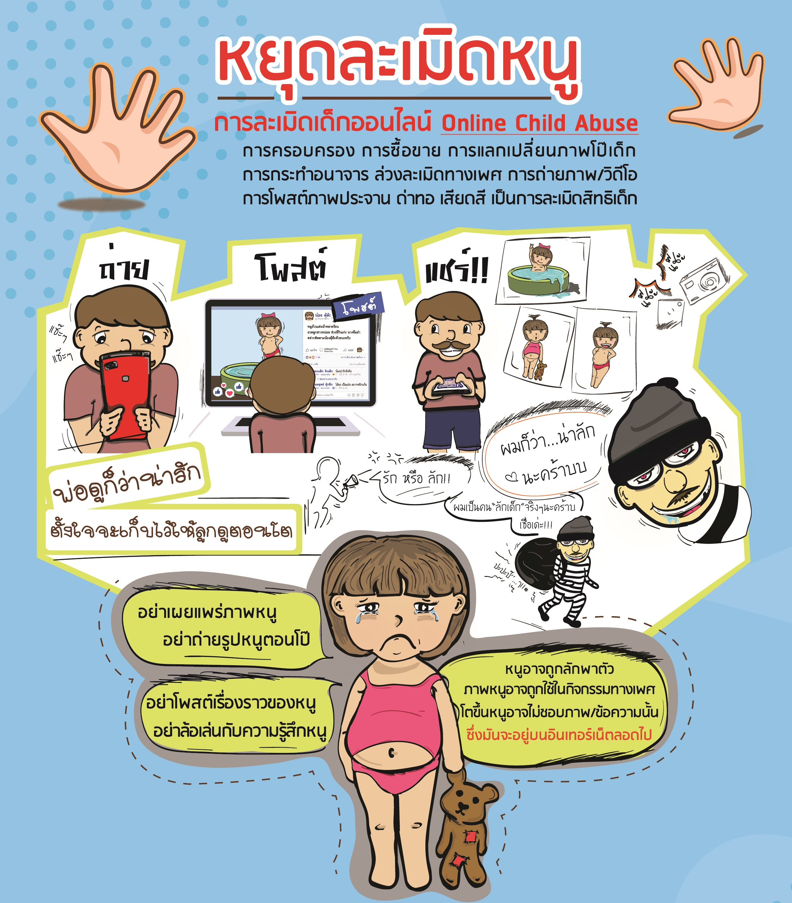

การถูกล่วงละเมิดทางเพศเกิดขึ้นได้ในหลายรูปแบบ
- การล่วงละเมิดทางเพศ
- สัมผัสที่ไม่พึงประสงค์หรือการจูบ
- ข่มขู่หรือบังคับให้มีเพศสัมพันธ์ หรือกิจกรรมทางเพศที่เกี่ยวข้องรวมทั้งกิจกรรมที่เกี่ยวข้องกับการใช้ความรุนแรงหรือทำให้เกิดความเจ็บปวด
ผลกระทบของการถูกล่วงละเมิดทางเพศ
ความรุนแรงระหว่างบุคคล เช่น การถูกล่วงละเมิดทางเพศ เป็นหนึ่งในเหตุการณ์ที่เจ็บปวดมากที่สุดที่บุคคลหนึ่งจะประสบได้ การตอบสนองต่อความต้องการได้ทันทีของเหยื่อ / ผู้รอดชีวิต จะช่วยลดอันตราย โดยเชื่อและทำตาม สิ่งที่สำคัญคือต้องช่วยสนับสนุนแก่พวกเขาในขณะที่เขากำลังฟื้นตัว และต้องให้เวลาในการเยียวยาด้วยวิถีของเขาเอง
ข้อเท็จจริงเกี่ยวกับการถูกล่วงละเมิดทางเพศ
-
การถูกล่วงละเมิดทางเพศส่วนใหญ่เป็นการกระทำที่ผู้ชายกระทำต่อผู้หญิงและเด็ก
-
การถูกล่วงละเมิดทางเพศยังเกิดขึ้นกับผู้ชายโดยการกระทำจากผู้ชายอีกคน
-
คนส่วนใหญ่ที่รู้เกี่ยวกับการทำร้ายทางเพศ หรือเคยพบกับผู้กระทำผิด
